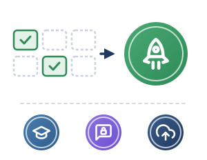

1Definizione
1Definizione 2Pianificazione
2Pianificazione 3Adozione
3Adozione 4Monitoraggio
4Monitoraggio 5Conclusione
5Conclusione
Si parte dalle classi pilota: formazione, prompt sicuri, censimento
Lancio operativo, formazione e censimento
D.M. 166/2025, par. 4.1, punto 3
- Adozione graduale, ad esempio con classi pilota, prima dell’estensione su larga scala.
- Formazione del personale sull’AI Literacy (art. 4 AI Act), sostenuta dal PNRR (D.M. 219/2025).
- Prompt sicuri: niente dati anagrafici, cronologia e tracciamento disattivati.
- Scheda Progetto IA su Piattaforma Unica, per il censimento ministeriale (D.M. 192/2023; D.M. 166/2025, art. 6).
Esempio: due classi pilota per 6 settimane
Il tutor virtuale entra in aula
- Prima dell’avvio, i docenti si formano presso lo snodo territoriale PNRR e configurano token pseudonimizzati di classe (
alunno_classe2a_01). - In classe: nessun nome, numero di telefono o dato personale nei prompt.
- La segreteria compila la Scheda Progetto IA su
unica.istruzione.gov.it.